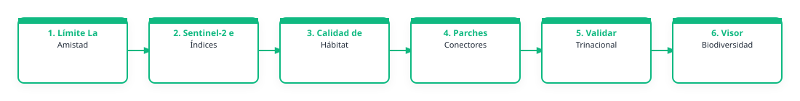

1. Problema que busca atender
El Gran Bosque La Amistad, compartido entre Costa Rica y Panamá, alberga ecosistemas de alta importancia para la biodiversidad y la conectividad ecológica regional; sin embargo, enfrenta presiones asociadas a cambios de uso del suelo, fragmentación del paisaje y posibles afectaciones sobre especies dependientes del bosque. Aunque existen esfuerzos de monitoreo biológico impulsados por organizaciones locales, áreas protegidas y brigadas comunitarias, actualmente la información sobre biodiversidad y conectividad del paisaje suele encontrarse dispersa y poco integrada para apoyar decisiones territoriales. Se requiere mejorar el acceso a información espacial que permita identificar áreas prioritarias de conectividad ecológica relevantes para especies focales de aves y mamíferos, fortaleciendo así procesos de monitoreo, conservación y restauración del paisaje.
2. Relevancia del problema
Este problema es relevante porque el territorio del Gran Bosque La Amistad concentra ecosistemas prioritarios para la conservación de la biodiversidad y la conectividad ecológica regional, donde diversas organizaciones, áreas protegidas y brigadas comunitarias realizan esfuerzos de monitoreo y gestión del paisaje. La ausencia de información espacial integrada y oportuna puede limitar la capacidad para priorizar sitios de conservación, orientar esfuerzos de monitoreo, identificar corredores ecológicos relevantes o detectar áreas que requieren restauración. Contar con mejores herramientas de análisis contribuiría a fortalecer decisiones de manejo territorial y conservación basadas en evidencia.
3. Producto esperado
Tipo de entregable: Mapa; Capa geoespacial; Script; Flujo de trabajo; Formulario de campo; Base de datos; Repositorio técnico
Descripción del producto: Se espera desarrollar un producto piloto de análisis espacial que permita visualizar e interpretar áreas prioritarias de conectividad ecológica relevantes para especies focales de aves y mamíferos dentro del Gran Bosque La Amistad. El usuario final podría consultar mapas temáticos de cobertura forestal, conectividad del paisaje y registros de biodiversidad integrados, así como identificar zonas prioritarias para monitoreo, conservación o restauración. Dependiendo de la factibilidad técnica, el producto podría incluir capas geoespaciales descargables, indicadores básicos y visualizaciones de apoyo para la toma de decisiones territoriales.
Componentes de despliegue sugeridos: Google Earth Engine App; Visor web; Base de datos; Formularios de campo; GeoServer u otro servidor geoespacial; API / servicio de datos
Nivel de acceso previsto: publico
Forma de uso institucional: Se espera que la solución sea utilizada principalmente como una herramienta de apoyo técnico para procesos de monitoreo, conservación y gestión territorial en el Gran Bosque La Amistad. El producto podría ser consultado y utilizado en reuniones técnicas para priorizar sitios de monitoreo, identificar áreas relevantes para conectividad ecológica y orientar acciones de conservación o restauración. Asimismo, las capas y mapas generados podrían compartirse entre organizaciones aliadas, áreas protegidas y brigadas comunitarias, con potencial de validación en campo e incorporación progresiva de nuevos datos de biodiversidad para fortalecer el análisis a futuro.
Requiere actualización: si
Frecuencia / Método de actualización: De manera preliminar, se imagina una actualización semiautomática y periódica (por ejemplo, anual o por temporada de monitoreo), incorporando nuevas imágenes satelitales disponibles del Programa Copernicus y registros actualizados de biodiversidad provenientes de plataformas abiertas y monitoreo participativo. Inicialmente, el proceso podría requerir revisión y actualización manual de algunas capas y validación técnica, con potencial de evolucionar hacia flujos más automatizados conforme se consolide la metodología y disponibilidad de datos.
4. Flujo de trabajo preliminar
El siguiente diagrama conceptualiza el procesamiento de datos y flujo técnico sugerido para la solución:

Descripción del flujo metodológico imaginado:
El flujo de trabajo preliminar iniciaría con la delimitación del área piloto y recopilación de insumos espaciales disponibles. Posteriormente, se seleccionarían y procesarían imágenes satelitales de Copernicus (Sentinel-2) para generar capas relacionadas con cobertura forestal, uso del suelo y métricas básicas de conectividad ecológica. De forma paralela, se recopilarían y depurarían registros abiertos de biodiversidad (GBIF, eBird, iNaturalist) y, cuando sea posible, datos de monitoreo participativo para especies focales de aves y mamíferos. Finalmente, se integrarían las capas de paisaje y biodiversidad para identificar patrones espaciales y generar mapas preliminares de áreas prioritarias de conectividad ecológica, orientados a apoyar decisiones de monitoreo, conservación y restauración.
Algoritmos o índices clave: De manera preliminar, se considera el uso de índices de vegetación como NDVI para caracterizar cobertura y condición de la vegetación, así como posibles métricas de paisaje orientadas a evaluar conectividad ecológica, fragmentación y configuración del hábitat. También podrían explorarse herramientas de clasificación de cobertura del suelo y análisis espacial utilizando imágenes Sentinel-2 del Programa Copernicus. Entre las herramientas potenciales se incluyen QGIS, Google Earth Engine y plataformas de datos abiertos de biodiversidad (GBIF, eBird e iNaturalist), según factibilidad técnica y alcance del ejercicio.
5. Datos e insumos identificados
Insumos satelitales y capas locales necesarias para el despliegue del prototipo:
| Insumo / Variable | Detalle en la Ficha |
|---|---|
| Datos Satelitales / Fuentes Copernicus | Sentinel-2 / óptico; Copernicus Land Monitoring Service; Copernicus DEM; Productos/índices de vegetación; Datos de campo; Límites locales / institucionales |
| Datos Locales Disponibles | Se cuenta con acceso a diversos insumos espaciales y de campo relevantes para el desarrollo de la aplicación, incluyendo límites de áreas protegidas, corredores biológicos y capas biofísicas disponibles (elevación, hidrografía, cobertura forestal y red vial). Además, existen registros de biodiversidad provenientes de monitoreo biológico participativo (aves y mamíferos), cámaras trampa, observaciones de campo y fotografías georreferenciadas generadas por organizaciones y brigadas vinculadas a Guardianes de la Cordillera. También se prevé complementar con registros abiertos disponibles en plataformas como GBIF, eBird e iNaturalist, según disponibilidad y calidad de datos. |
| Datos Requeridos / Faltantes | Sería necesario identificar y consolidar algunas capas y metodologías específicas para el análisis de conectividad ecológica, incluyendo posibles métricas de paisaje, capas regionales actualizadas de cobertura forestal y herramientas apropiadas para integrar datos de biodiversidad con información satelital. Asimismo, se requiere orientación sobre el acceso y procesamiento de productos Copernicus más adecuados para este tipo de análisis, así como criterios para priorizar escalas espaciales y especies focales según la factibilidad técnica del ejercicio. |
| Documento Relacionado | No indicado en la ficha |
| Enlaces Externos / Observaciones | No indicado en la ficha |